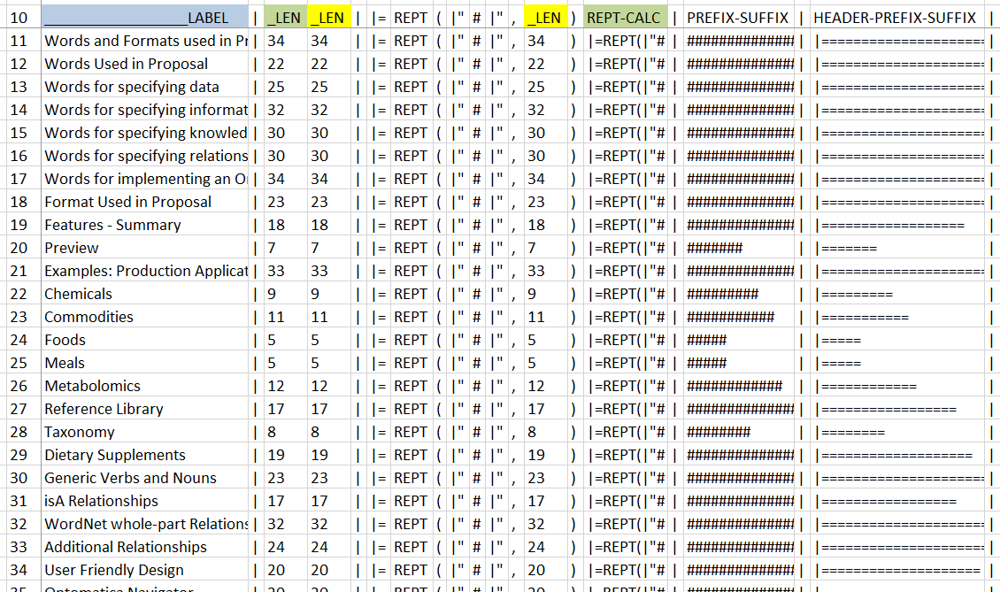
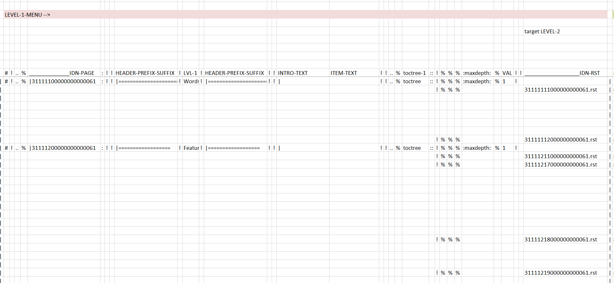

The world is a Grid¶
Note
Each section opens with a sentence about using the page example.
In some cases there is a second sentence.
Explanation text for image 1
{kind=link}
Explanation text for image 2

Explanation text for image 3
{kind=link}
Tip
Advice specific to the page.
Warning
Alert about techniques that will cause problems and errors.
See also
Directive — Describe¶
- Vocabulary
Definition-1 of controlled vocabulary.
Definition-2 of controlled vocabulary.
X
usedToMakeY
Two–column list¶
- async:
Indicate the function is an async function.
- type:
JSON-LD
- value:
42
- canonical:
- final:
Indicate the class is a final class.
- platform:
Windows, Linux
- synopsis:
Consist of one sentence describing the module’s purpose – it is currently only used in the Global Module Index.
- deprecated:
Mark a module as deprecated; it will be designated as such in various locations then.
- abstractmethod:
Indicate the property is abstract.
- classmethod:
Indicate the property is a classmethod.
- staticmethod:
Text here
- decorator:
Text here
GraphViz¶
Sphinx and GraphViz Data Flow¶
Terms and Glossary¶
A term that is defined in the glossary is formatted as follows: grammar
A bibliographic references is formatted as follows: See [TEK16] for more information about …
Code Block¶
PowerShell command to convert a Windows file to a Unix file
((Get-Content E:directory\31111100000000000061.rst)
-join "`n") + "`n" |
Set-Content -NoNewline E:directory\31111100000000000061.rst;
Lists¶
- List of Things:
these are ‘field lists’ not bulleted lists
- thing-1:
single item
- thing-2:
single item
- thing-3:
single item
Rubric¶
Sphinx-RDF-About-outline
1 What is RDF and what is it good for?
1.1 Really Quick Intro to RDF
1.2 Why we need a new standard for the Semantic Web
1.3 Introducing RDF
1.4 Triples of knowledge
2 Reading and Writing RDF
2.1 Notation 3
2.2 RDF/XML
2.3 Use a Validator!
YouTube¶
YouTube
We feature several YouTube videos.